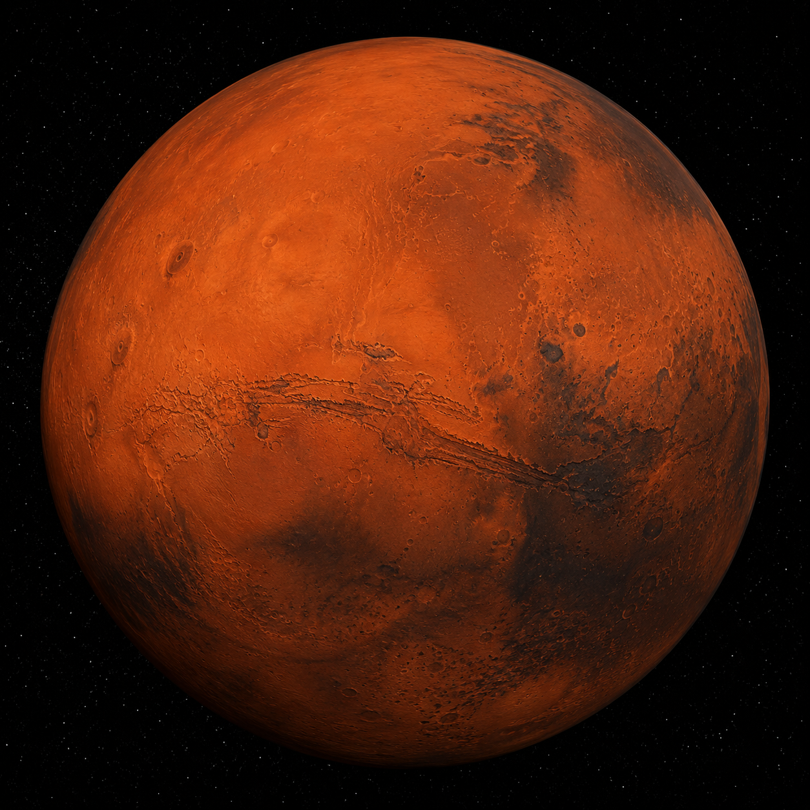

01
Olympus Mons é o maior vulcão do Sistema Solar.
O quarto planeta a partir do Sol, conhecido como o "planeta vermelho" devido ao seu solo rico em óxidos de ferro.
← Voltar ao Sistema Solar
Marte é um planeta rochoso com calotas polares, vulcões extintos e vales profundos. Possui uma atmosfera fina e temperaturas baixas.
Compare a duração do dia em Marte com outros planetas do Sistema Solar.
Marte leva aproximadamente o mesmo tempo que a Terra para girar, com um dia apenas um pouco mais longo: cerca de 24,6 horas.
Marte tem vulcões gigantes como Olympus Mons e vales como Valles Marineris. Sua fina atmosfera e baixas temperaturas dificultam a presença de água líquida.
O solo marciano contém óxidos de ferro que lhe dão a cor avermelhada.
Marte possui calotas polares de dióxido de carbono e água congelada.
Numerosas sondas e rovers já exploraram a superfície marciana.
Olympus Mons é o maior vulcão do Sistema Solar.
Tempestades de poeira podem cobrir todo o planeta por semanas.
Marte já pode ter tido água líquida em abundância no passado.